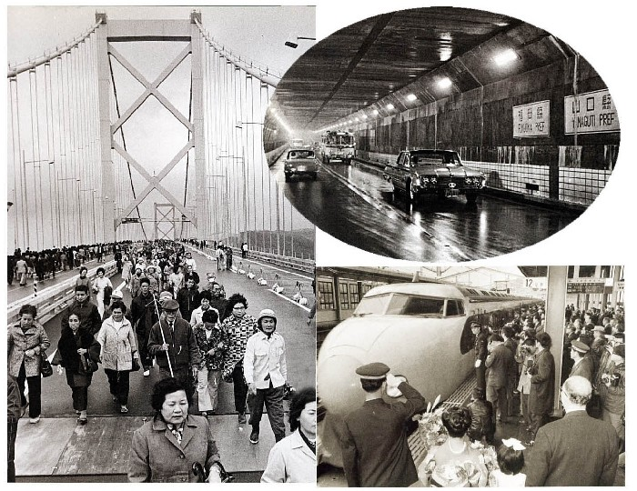
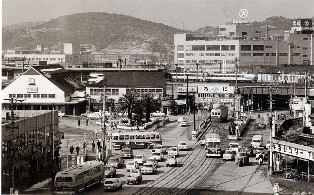
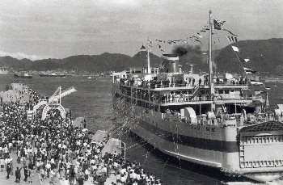

-

1942年 関門鉄道トンネルが開通
明治33年（1900年）に山陽鉄道が下関まで開通。 下関は西の鉄道の拠点になり、多くの人で賑わいました。その後も、昭和17年（1942年）に関門鉄道トンネルが開通しました。下関駅は、同じ年の11月15日に、細江町から現在の場所（竹崎町四丁目）に場所を移しました。-
1976年 釜山市と姉妹都市に
昭和51年（1976年）には、韓国の釜山広域市と姉妹都市締結を行うなど、国際的な交流が進みました。 -
その後
1958年 関門国道トンネルが開通
昭和33年（1958年）に、下関市と北九州市を結ぶ関門国道トンネルが開通しました。 距離は3461メートル（うち海底部分780メートル）、 「車道」と「人道」の2層構造になっています。1973年 関門橋が開通
昭和48年（1973年）に関門橋・中国自動車道（下関−小月間）が開通しました。1975年 新下関駅が開業
昭和50年（1975年）に山陽新幹線が開通し、新下関駅が開業しました。2005年 新「下関市」が誕生
平成17年（2005年）2月13日、下関市、菊川町、豊田町、豊浦町、豊北町の1市4町が合併し、新しい「下関市」が誕生しました。